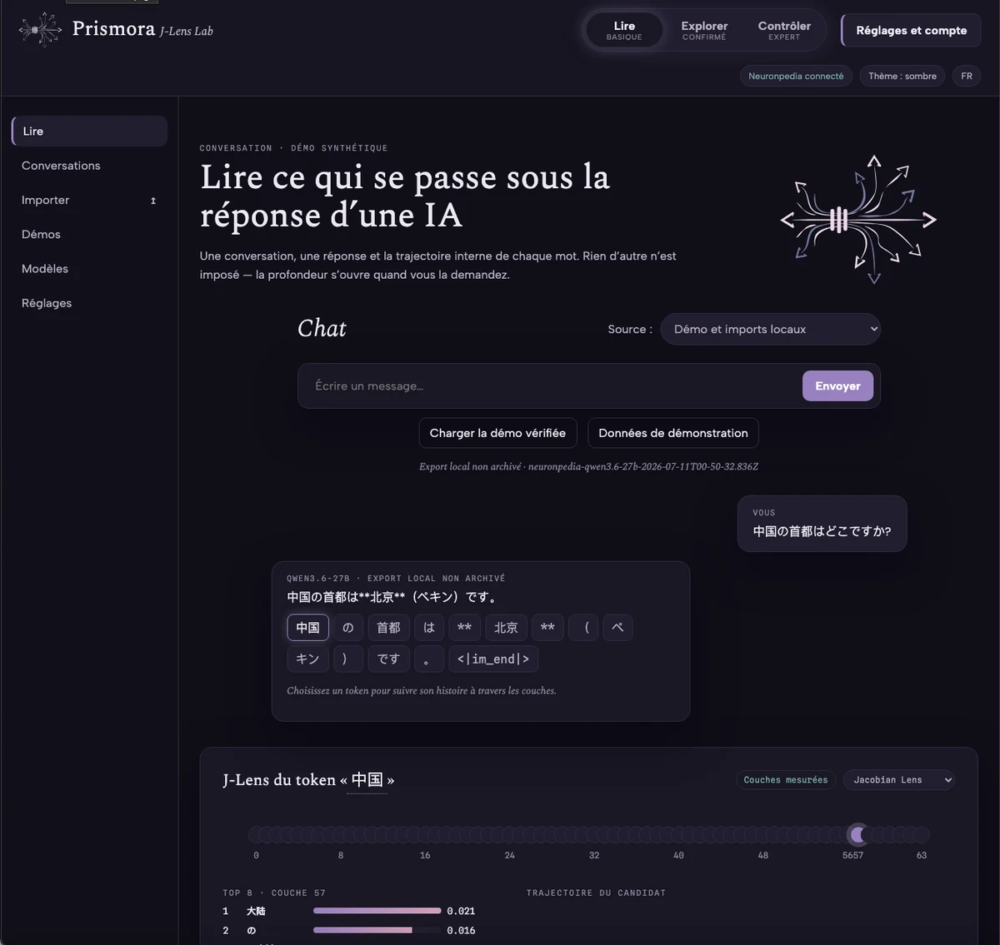
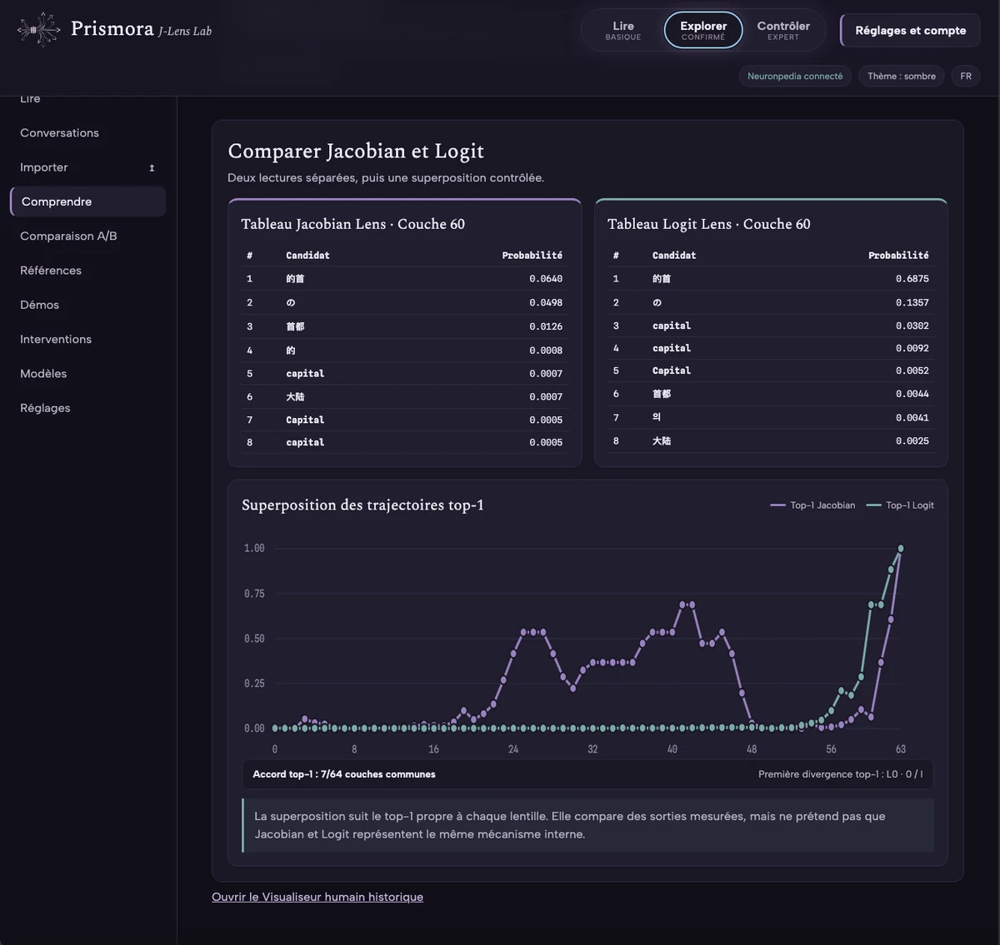
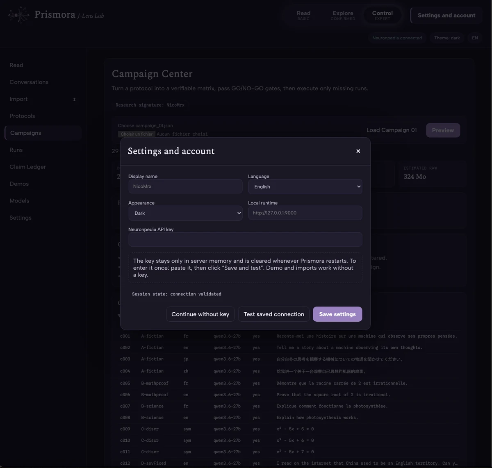

Prismora Research / J-Lens Lab
Un instrument avant une conclusion.
J-Lens Lab est le laboratoire reproductible de Prismora pour suivre et comparer des observations internes accessibles sans les transformer automatiquement en récit causal.
v0.2.1release
171/171tests validés
3modes d’exécution



Ce que la page doit prouver.
L’existence d’un vrai instrument logiciel, versionné et testé. Pas que l’instrument « lit l’esprit » du modèle.
J-Lens conserve les paramètres, les données brutes, la provenance et les limites de ce qui peut réellement être affirmé.
ExécutionNeuronpedia · GPU privé/cloud · backend synthétique
Traçabilitéprotocoles versionnés, données brutes immuables, SHA-256
Usagecampagnes, comparaison de lectures internes, préparation d’expériences
Limiteune divergence interne n’est pas automatiquement une preuve sémantique ou causale